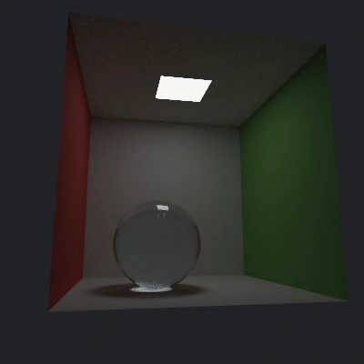

← RIVXACTUAL TRAINED ASSET · WEBGL2 / ORDINARY RIVE
A different way to keep the image alive
A scene held in Gaussians.
Glass, reflections and soft light learned from rendered views. Move the camera; the ellipses and their view-dependent colors follow.
Loading the external trained field…
Drag to orbit · scroll to zoom
Loading 7.2 MB of learned scene data
Standby · preparing ordinary Rive geometry…
Same trained positions, covariance and directional color; a representative subset becomes native ellipses. Camera transforms respond live. Selection, color and ordering refresh in short batches. Export stores the current view as ordinary shapes, without a shader or 3D host.
Checking floating-point compositing support…
The field is editable
Sculpt the look, keep the scene.
30,559 learned Gaussians3D covariance perspective-projected ellipsesDegree 3 SH directional appearanceCompact checkpointstep 5,000 · all original splats↓ Real trained PLY · 7.2 MB
Diagnostic comparison · the larger training result
The native final PLY contains 291,770 Gaussians. This browser view exposes more floaters and unstable details; its appearance is not a matched reference-render quality measurement. Use Training camera for the recorded pose, square 400 × 400 image, one-radian horizontal field of view and complete uncropped field. Load the larger result to inspect the difference; this is a 68.9 MB download and is never preloaded.
Σ
Keep the field, change the view.
This is the existing native trainer’s glass room. The compact checkpoint contains 30,559 Gaussians; the optional final field contains 291,770 and downloads only when requested. Both preserve every original Gaussian. Positions, three scales, orientation, opacity and all 48 color coefficients live in the external PLY asset.
The browser projects the full covariance and sorts back to front. Try Covariance contours, then reduce Splat scale. These are oriented ellipses, not identical fuzzy dots. The contours are a WebGL inspection view; they are not Rive paths.
↗
Baked appearance. Live projection.
The glass response is learned from captured views. Orbiting evaluates that field; it does not trace new refracted rays. View-dependent color helps reproduce changing highlights, but a large camera move can expose missing coverage or stretched splats.
Toggle directional color to isolate the constant SH term. That term is the learned view average, not a physically separated diffuse material. Lighting is baked: this asset does not support physically correct relighting.

One source view
The native scene was rendered from multiple cameras before training. This image is a reference capture, not a layer used by the live viewer. Training camera restores its exact pose and intrinsics; the 400 × 400 result is letterboxed. Showcase view uses the same starting pose with a wider responsive canvas and the room crop.
Supported GPUs accumulate unclamped positive SH colors in a floating target, then clamp the completed image for display. A labeled fixed-range fallback remains available on other GPUs. The browser still uses its own mean-depth sorting and Gaussian cutoff, so matching the camera does not establish pixel equivalence to the trainer.
Where Rive fits
RIVX can retain an external Gaussian field alongside its scene and composition. Choose between a custom WebGL2 Gaussian renderer and an actual ordinary Rive approximation of this same scene. The Rive view draws the scene itself with native ellipse shapes, not an image or just a control overlay. This focused player uses the native trainer’s PLY dialect; it is not the complete native RIVX scene-graph player.
Retained RIVX / custom renderer
Project anisotropic covariance and evaluate Gaussian opacity directly. A dense learned field remains one resource, with a live camera.
Portable vanilla .riv
Select Layered ellipses to approximate each selected Gaussian with six concentric opacity layers, or Flat ellipses to expose the geometry. The 512–2,048 Gaussian budget makes the cost visible. Export writes these ordinary shapes into a fixed-view .riv. It does not retain the full field, host camera or exact Gaussian kernel.
What would true relighting require?
This PLY stores outgoing appearance. It does not separate material from the lighting that produced it. Relightable 3D Gaussian learns normals, BRDF parameters and incident lighting; PRTGaussian learns light transport from views captured under known changing lights. Either route calls for a different training/export contract, not merely a new light slider.
The editor here makes useful changes to the existing field. Its light paint is a deliberate appearance effect. The glass region has no recovered albedo, physical surface normal or material model, so these edits do not pretend to solve inverse rendering.
Default source: native RIVX GsplatTrainer checkpoint, step 5,000. The optional final field preserves the larger existing native PLY; it shows more floaters in this browser view and is included for inspection, not as a quality upgrade. The WebGL route retains all source records. The ordinary Rive comparison selects a bounded subset using screen-space coverage and projected importance; it clamps each color before ordinary alpha blending and approximates radial opacity with a finite number of layers. Missing density and banding are expected, not a measurement of native enhanced-backend parity. The default room crop hides Gaussian centers outside the original room bounds, with a 0.045-unit margin; disable it to inspect the complete field. No fit-quality metric is claimed for either saved state. All interaction here is local.